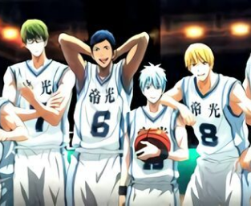
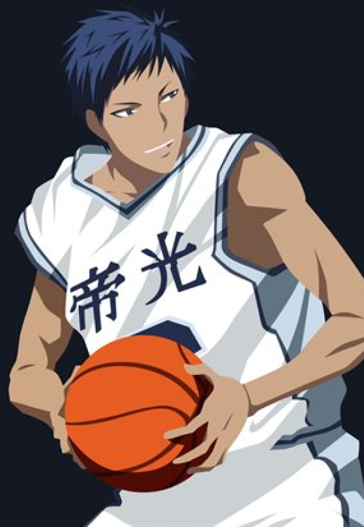

Acompanhe as novidades do melhor Anime de basket
Kuroko no Basket é uma série de mangá escrita e ilustrada por Tadatoshi Fujimaki. Foi serializado na revista semanal Weekly Shōnen Jump de 8 de dezembro de 2008 a 4 de dezembro de 2014, onde os capítulos individuais foram coletados e publicados em 30 volumes tankōbon pela editora Shueisha. A série conta a história de um clube de basquete da escola tentando vencer o torneio nacional.
Saiba tudo sobre as gerações dos milagres

Redes Sociais
